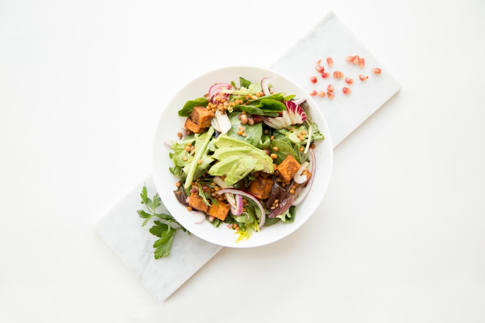

THE GAZETTE
The Comfort Culinary Gazette
Our chef articles on 8-hour slow simmering, cast-iron braising mastery, and organic broth science.

Simmer Science
8-Hour Slow Simmering
Understanding collagen breakdown, gelatin velvet texture, and aromatic retention.
Read Article →
Braising Mastery
Dutch Oven Braising Secrets
Maillard reaction searing, red wine deglazing, and heat distribution in enamelled cast iron.
Read Article →
Farm Sourcing
Organic Heirloom Produce
Selecting farm-to-table root vegetables, sweet parsnips, and roasted marrow bones for broths.
Read Article →
Pastry Baking
Ultimate Flaky Pot Pie Crust
Cold European butter lamination, steam pockets, and egg wash golden shine techniques.
Read Article →
Soup Aromatics
Aromatics in Comfort Soups
Infusing fresh rosemary sprigs, thyme bundles, and Turkish bay leaves into broth bases.
Read Article →
Bread Pairings
Pairing Sourdough with Stews
Selecting open-crumb sourdough boules and whipped honey butter to complement rich sauces.
Read Article →
Macro Harmony
Anatomy of a Comfort Meal
Balancing savory umami, rich cream, acid reductions, and crispy texture elements.
Read Article →